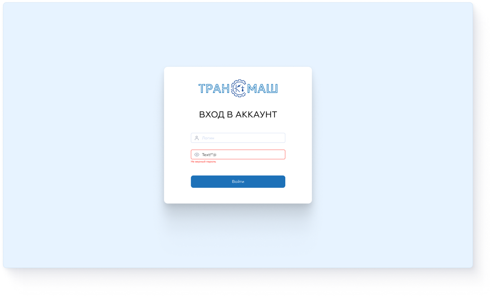
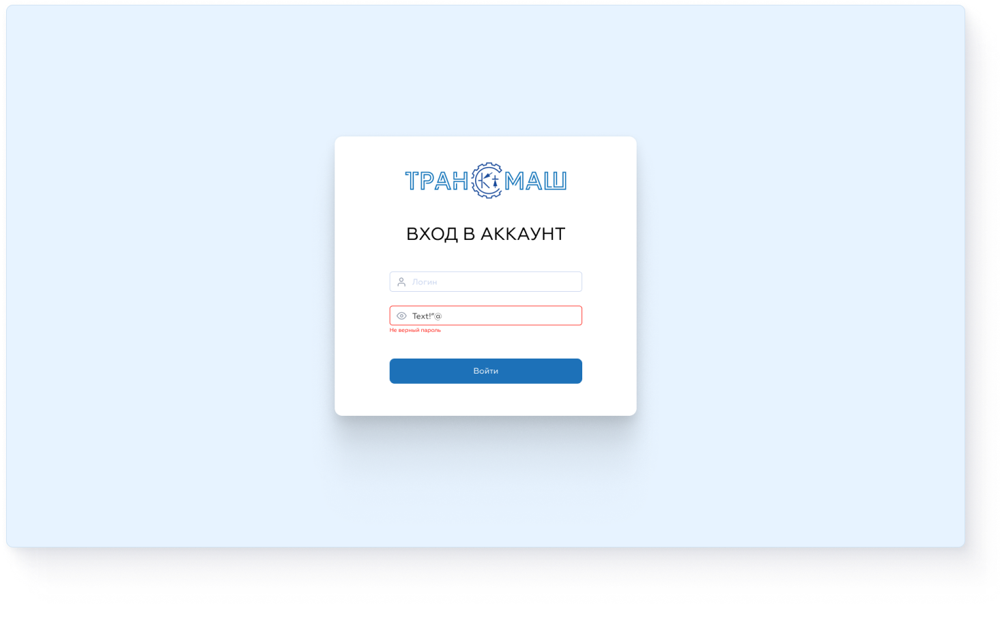
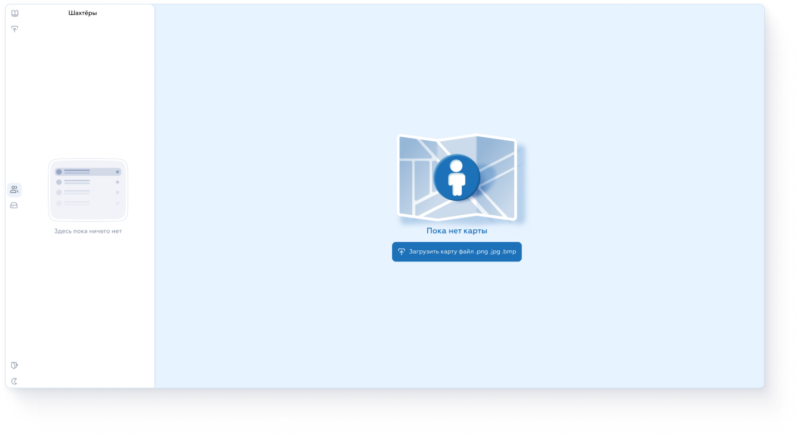
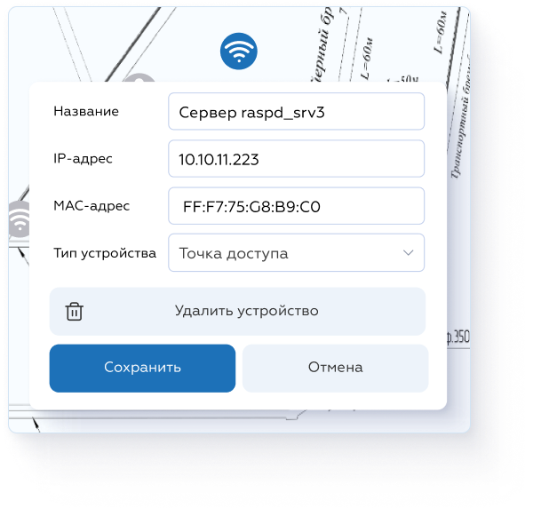
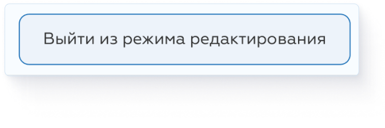
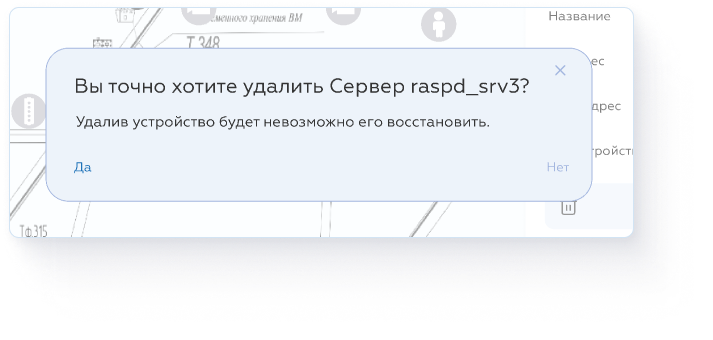
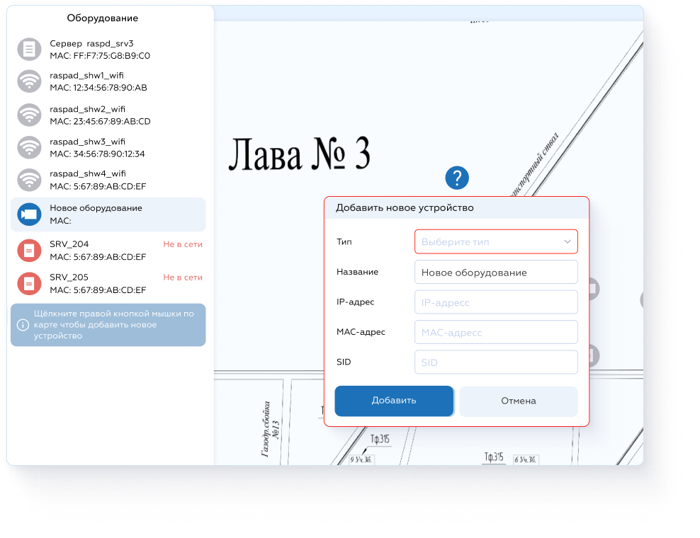

Доступ
Вход
Пользовательский интерфейс доступен по адресу http://<ip-сервера>:80
Вас встретит страница Входа в аккаунт. Введите логин и пароль для доступа к системе.
Инструкция пользователя системы позиционирования шахтёров
Пользовательский интерфейс доступен по адресу http://<ip-сервера>:80
Вас встретит страница Входа в аккаунт. Введите логин и пароль для доступа к системе.
Система Позиционирования отслеживает местоположение шахтёра в шахте используя данные присылаемые с устройства Исток, а так же состояние, местоположение и информацию о прочем оборудовании.
Если ваша карта выглядит так как показано на скриншоте ниже, Нажмите на большую синюю кнопку «Загрузить карту» и выберите нужный файл формата .png .jpg или .bmp
На карте показано расположение всех шахтёров и оборудования. Чтобы перемещаться по карте зажмите левую кнопку мыши и чтобы приближаться/отдалятся используйте колёсико мыши.
Устройства бывают нескольких типов: шахтёры, камеры, точки доступа и сервера. Все эти устройства отслеживаются на карте и разделены на два списка: Шахтёры и Оборудование. Кликните по иконкам в центре бокового меню чтобы переключатся между этими списками.
Кликните по устройству в списке и вас автоматически на карте перекинет к нему, откроется окно информации, такая как: Название устройства, MAC-адресс, IP-адресс и т. д. Устройства типа Шахтёр в окне информации показывают так же ближайшие доступные точки и уровень сигнала до них.
Наведите на иконку ( i ) напротив устройства в списке чтобы просмотреть информацию о времени последнего
сигнала.
Устройства Не в сети стоят в самом конце списка, горят красным цветом и помечены надписью.
Помимо переключения между списками можно: Скачать инструкцию пользователя, Загрузить (новую/другую) карту, Выйти из системы или Сменить цветовую тему. Все текстовые подсказки есть при наведении на иконку.
Администратору доступна кнопка «Редактировать» в правом нижнем углу карты. Нажмите на неё чтобы Удалять/добавлять устройства, изменять информацию об устройстве, менять его местоположение. Если вы находитесь в режиме редактирования, кнопка поменяет цвет и изменит надпись.
Чтобы Изменить данные об устройстве, в режиме редактирования нажмите на устройство на карте или в списке и в окне информации можете спокойно редактировать всю доступную информацию.
 Некоторые данные нельзя поменять. У шахтёров можно изменить только имя.
Так же можно удалять устройства, в том же окне что и менять информацию. Удалить устройство случайно не получится, перед выполнением действия высветится окно с подтверждением.
Внимательно проверяйте вводимые вами данные, некоторые из них не возможно будет изменить.
Чтобы добавить новое устройство кликните правой кнопкой мыши по карте, далее Добавить новое устройство. Во время добавления можете перетаскивать иконку по карте. Только после заполнения всех данных кнопка Добавить станет доступна.
